h≥I-c-Ifpw kap-{Z-ßfpw
61
61
h≥I-c-Ifpw kap-{Z-ßfpw
Adn-b-s∏-SmØ \mSp-Iƒ tXSnbpw kº-Øn\pth≠nbpw IuXp-I-
Øns‚ t]cn-ep-sams° a\p-jy≥ \S-Øn-bn-´p≈ kap-{Z-bm-{X-Iƒ°v
\o≠ Ncn-{X-ap-≠v. ]pXp-temIw tXSnbp≈ Cu bm{X-Iƒ kml-knI
k©m-cn-Isf FhnsSsb√mw FØn-®n-cn°mw? Ch-cn¬ Nne¿ ]q¿W-
ambpw kap-{Z-Øn-eqsS k©-cn®v temIw Np‰n-h-∂n-´p≠v.
F∂m¬, Ic-bn-eqsS am{Xw k©-cn®v temIw Np‰m≥ Ign-bptam?
kmaqly -im-kv{X-em-_nse t•m_v \nco-£n®v Is≠Øq.
Page 61
Page 62
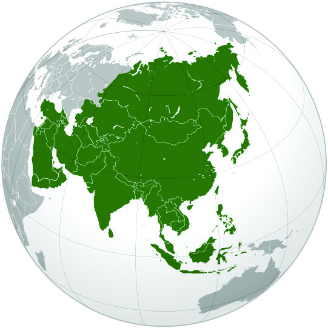
62
62
kmaq-ly-imkv{Xw V
kmaq-ly-imkv{Xw V
kmaq-ly-imkv{X em_nse temI-`q-]Sw \nco-£n®v NphsS \¬In-bn-
´p≈ tNmZy-߃°v DØcw Is≠-Øm≥ {ian-°p:
$
`q]-S-Øn¬ IqSp-X¬ `mKhpw GXp \nd-Øn-emWv Nn{Xo-I-cn-®n-cn-
°p-∂Xv?
$
Cu \ndw F¥ns\ kqNn-∏n-°p∂p?
Cu hnim-e-amb Pe-`m-K-ßsf kap-{Z-߃ F∂v hnfn-°p-∂p. `qan-
bpsS D]-cn-XeØns‚ GI-tZiw aq∂n¬c≠v `mKw kap-{Z-ß-fmWv.
a‰p \nd-ß-fn¬ Nne {]tZ-i-߃ Nn{Xo-I-cn-®n-cn-°p-∂Xv ImWm-a-t√m.
Ch-sbms° Ic-`m-K-ß-fm-Wv.
kap-{Z-߃°n-S-bn-embn ÿnXnsNøp∂ AXn-hn-im-e-amb Ic`mK-ß-
fmWv h≥I-c-Iƒ. t•m_v \ncn-£n-®m¬ GsXms° h≥I-c-Iƒ
ImWm≥ Ignbpw?
$ Gjy
$ A‚m¿´n°
$ B{^n°
$ bqtdm∏v
$ hSs° Ata-cn°
$ Bkvt{S-en-b
$ sXs° Ata-cn°
Hmtcm h≥I-c-bp-sSbpw khn-ti-j-X-Iƒ ]cn-tim-[n-°mw.
Gjy
$
G‰hpw henb h≥Ic
Gjy-bm-Wv.
$
C¥y≥ alm-k-ap-{Z-
Øn\p hS-°mbn ÿnXn
sNøp-∂p.
$
temI-Øn¬ G‰hpw
IqSpX¬ P\-߃ Xma-kn-
°p-∂p.
Zzo]p-Iƒ
Gjy
Gjy
Page 63

h≥I-c-Ifpw kap-{Z-ßfpw
63
63
h≥I-c-Ifpw kap-{Z-ßfpw
$
\ΩpsS cmPy-amb C¥y Cu
h≥IcbpsS `mK-am-Wv.
$
temI-Ønse G‰hpw Dbcw IqSnb
sImSp-ap-Sn-bmb Fh-dÃv ChnsS-
bmWv.
$
[mcmfw ag e`n-°p∂ {]tZ-i-߃,
ag Xosc Ipd-hmb {]tZ-i-߃,
h¿jw apgp-h≥ a™p aqSn-°n-S-°p∂ {]tZ-i-߃, hf-sc -NqSv
IqSnb {]tZ-i-߃, anX-amb NqSpw XWp-∏pap≈ {]tZ-i-߃
F∂nßs\ H´-\-h[n sshhn-[y-߃ Cu h≥I-c-bn¬ ImWmw.
Fh-dÃv sImSp-apSn
kn‘p\Zn
ssN\-bnse s\¬°rjn
$
s\√v, tKmX-ºv, tNmfw XpSßn hnhn[Xcw hnf-Iƒ Irjn sNøp-∂p.
$
temIØv G‰hpw IqSp-X¬ s\√v D¬∏m-Zn-∏n-°p-∂Xv Gjy-bn-emWv.
Xebpb¿Øn lnam-ebw
temI-Ønse Xs∂ G‰hpw henb ]¿h-X-\n-c-bmWv lnam-e-bw.
Gjym- h≥I-c-bn¬ C¥ybv°v hS-°mbn ÿnXn- sN-øp∂ Cu ]¿hX
\nc C¥y-bpsS Imem-h-ÿ-bnepw kwkvIm-c-Ønepw Gsd kzm[o\w
sNep-Øp-∂p. temI-Ønse G‰hpw Db-c-ap≈ sImSp-ap-Sn-bmb
t\∏mfnse au≠v Fh-dÃv Dƒs∏sS \nc-h[n sImSp-ap-Sn-Iƒ Dƒs°m-
≈p∂ Cu ]¿hX\nc-I-fn¬ ]e `mK-ßfpw ÿnc-ambn a™p
aqSn°nS-°p∂-Xn-\memWv CXn\v lnam-ebw F∂ t]cv h∂-Xv.
Page 64
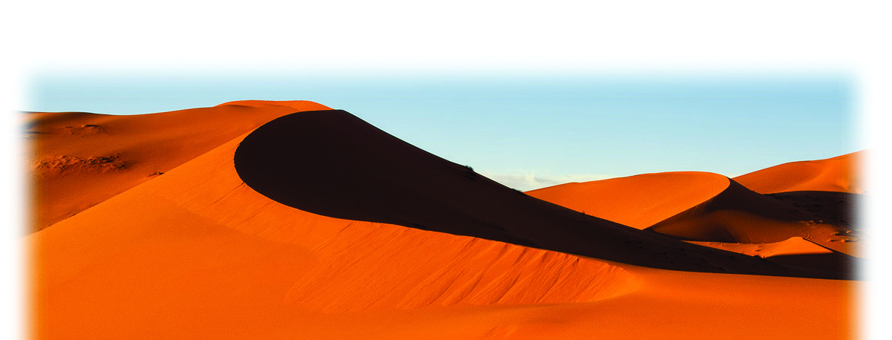
64
64
kmaq-ly-imkv{Xw V
kmaq-ly-imkv{Xw V
Gjymh≥I-c-bnse {][m-\-s∏´ kky-ß-fp-sSbpw P¥p-°-fp-sSbpw
Nn{X-߃ C‚¿s\‰n¬\n∂v tiJ-cn-®v kmaq-ly-im-kv{X-em-_nse
Iºyq´dn¬ {]tXyI t^mƒUdn¬ kq£n°pI.
B{^n°
$
B{^n-°-bv°v hep∏-
Øn¬ c≠mw ÿm\-
amWp≈-Xv.
$
C¥y≥ alm-k-ap-{Z-
Øn\pw A‰vem‚nIv kap-
{Z-Øn-\p-an-S-bn-embn
ÿnXnsNøp-∂p.
$
P\-hm-k-Øn¬ c≠mw
ÿm\w.
$
IqSp-X¬ {]tZ-i-ßfpw
acp-`q-an-bm-Wv. AXp-
sIm≠v Irjn hf-sc -Ip-d-
hm-Wv.
klmdm acp-`qan
B{^n°
B{^n°
B{^n-°-≥ B\
B{^n-°bnse tKm{X-h¿K-°m¿
$
temI-Ønse G‰hpw henb acp-`q-an-bmb klmd Chn-sS-bm-Wv.
$
temIØnse G‰hpw \ofw IqSnb \Zn-bmb ss\¬ Cu h≥-Icbn-
eqsS Hgp-Ip∂p.
64
64
Page 65
h≥I-c-Ifpw kap-{Z-ßfpw
65
65
h≥I-c-Ifpw kap-{Z-ßfpw
$
temIØv G‰hpw IqSp-X¬
h \ y - P o - h n - k - º Ø p ≈
\n_nU-h-\-߃ Cu h≥I-c-
bn¬ ImWmw.
B{^n° h≥I-c-bnse {][m-\-
s∏´ P¥p-°-fp-sSbpw kky-ß-fp-
sSbpw Nn{X-߃ C‚¿s\‰n¬
\n∂v tiJ-cn-®v kmaq-ly-im-kv{X-
em-_nse Iºyq´dn¬ {]tXyI
t^mƒUdn¬ kq£n°pI.
hS-t°- A-ta-cn°
$
]k-^nIv kap-{Z-Øn\pw
A‰vem‚nIv kap-{Z-Øn\pw
CSbn-embn ÿnXnsNøp-∂p.
$
hSt° Ata-cn° hep∏-
Øn¬ aq∂mw ÿm\-Øm-Wv.
$
AemkvIm ]¿hX\nc-bnse
amIvIn≥enbmWv G‰hpw
Dbcw IqSnb sImSp-apSn.
$
temIØv e`y-amb D]-cn-
Xe ip≤-P-e-Øns‚
GItZiw 21% Dƒs°m-
≈p∂ A©v alm-X-Sm-I-
߃ Chn-sS-bp-≠v.
$
a™p-aqSn°nS-°p∂
{]tZ-iØv Xmakn-°p∂
C\yq-´p-Iƒ (FkvIn-tam-
Iƒ) ChnSsØ {]tXy-I-
X-bm-Wv.
$
Imem-h-ÿbpw aÆpw
Irjn-°v A-\p-tbm-Py-am-Wv.
H∂m-a-\mbn ss\¬
B{^n-°-bpsS hS°pIng-°v `mK-
Øp-IqSn Hgp-Ip∂ ss\¬ BWv
temI-Ønse G‰hpw \ofw
IqSnb \Zn. GI-tZiw 6850
Intem-ao-‰-¿ \of-ap≈ Cu \Znsb
""A¥m-cmjv{S \Zn'' (International
River) F∂v hnti-jn-∏n-°m-dp-≠v.
ImcWw Cu \Zn B{^n°
h≥Ic-bnse ]Xn-s\m∂v cmPy-ß-
fn-eqsS Hgp-Ip-∂p. CuPn-]vXv,
kpUm≥ F∂o cmPy-ß-fpsS
Poh-\m-Un-bmbn ss\¬ \Znsb
hnti-jn-∏n-°m-dp-≠v.
hSt° Ata-cn°
hSt° Ata-cn°
Page 66
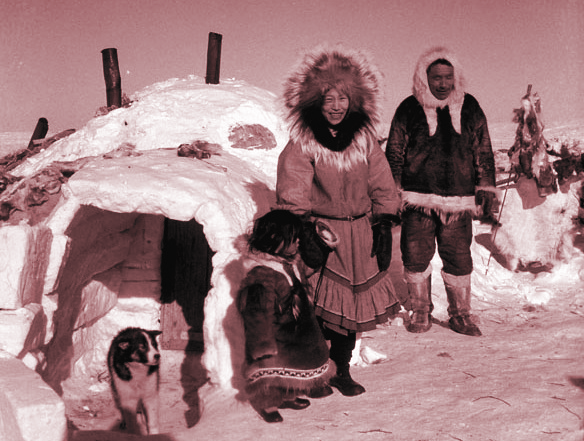

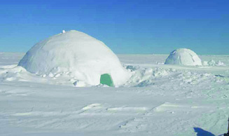
66
66
kmaq-ly-imkv{Xw V
kmaq-ly-imkv{Xw V
$
temIØv G‰hpw IqSp-X¬ tKmXºv
D¬∏m-Zn-∏n-°p-∂Xv Chn-sS-bm-Wv.
hSt° Ata-cn° h≥I-c-bnse {][m-\-
s∏´ P¥p-°-fp-sSbpw kky-ß-fp-sSbpw
Nn{X-߃ C‚¿s\‰n¬\n∂v tiJ-cn-®v
kmaq-ly-im-kv{X-em-_nse Iºyq´dn¬
{]tXyI t^mƒUdn¬ kq£n°pI.
\yptbm¿°v \Kcw
Ata-cn-°-bnse tKmXºv ]mSw
C\yq´v hwi-P¿ (FkvIn-tam-Iƒ)
a™p-sIm≠v hoSp-Iƒ
a™p-d™p InS-°p∂ hS-°≥
{[ph{]tZ-iØv Xma-kn-°p∂ C\yq-
´p-Iƒ (FkvIn-tam-Iƒ) XWp-∏p-
ImeØv Xm¬°m-en-I-ambn a™p-
I-´Iƒ sIm≠v hoSp-≠m-°m-dp-≠v.
Cu hoSp-Iƒ "C•p' F∂ t]cn-emWv
Adn-b-s∏-Sp-∂-Xv.
]©-a-lm-X-Sm-I-߃
hSt° Ata-cn-°-bnse
Im\U, bp.F-kv.F. F∂o
cmPy-ß-fn-embn ÿnXn-sN-
øp∂ kp∏o-cn-b¿, anjn-K¨,
lyqd≥, Cdn, H‚m-cntbm
F∂n-h-bmWv ]©-a-lm-
XSmI-߃.
Page 67
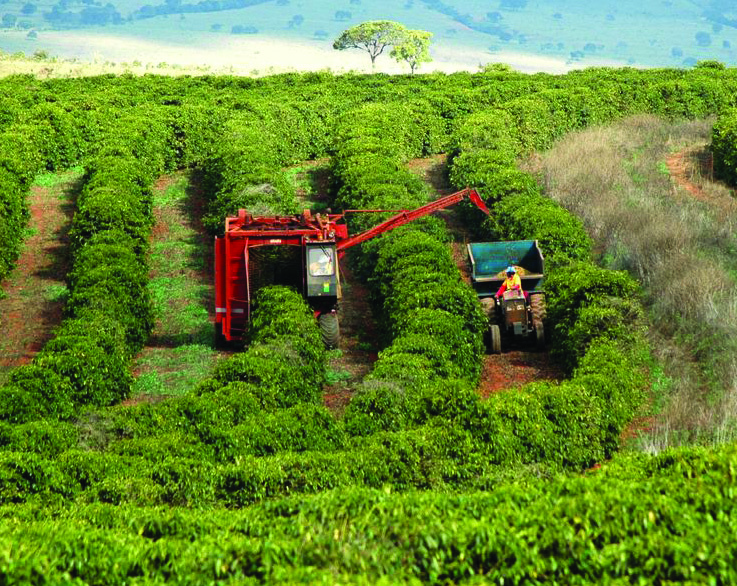
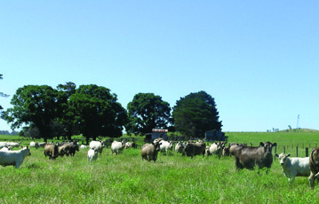
h≥I-c-Ifpw kap-{Z-ßfpw
67
67
h≥I-c-Ifpw kap-{Z-ßfpw
sXt° Ata-cn°
{_ko-ense Im∏n-tØm´w
sXt° Ata-cn°
$
]k-^nIv kap-{Z-Øn\pw
A‰vem‚nIv kap-{Z-Øn-\p-
an-S-bn-embn
ÿnXn-
sNøp∂p.
$
hep-∏-Øn¬ \mem-a-Xv.
$
au≠v "AtImMvKph'
bmWv G‰hpw Db-c-ap≈
sImSp-ap-Sn.
$
temIØv G‰hpw IqSpX¬
ip≤-Pew hln-®p-sIm≠v
HgpIp∂ Ba-tkm¨ \Zn
Cu h≥I-c-bn-emWv.
$
sXt° Atacn°bpsS
h S ° p ` m K Ø p ≈
Batkm¨ \ZoXSØn-
ep≈ \n_nUh\ßfnse
kky-P¥pPme߃ Gsd
sshhn[yap≈-h-bmWv.
$
I∂p-Imenhf¿Ø¬ Chn-SsØ P\-ß-fpsS Hcp {][m\
sXmgnemWv.
Ba-tkm¨ \Zn
hmWnPy I∂p-Im-en-h-f¿Ø¬
sXt° Ata-cn°
Page 68
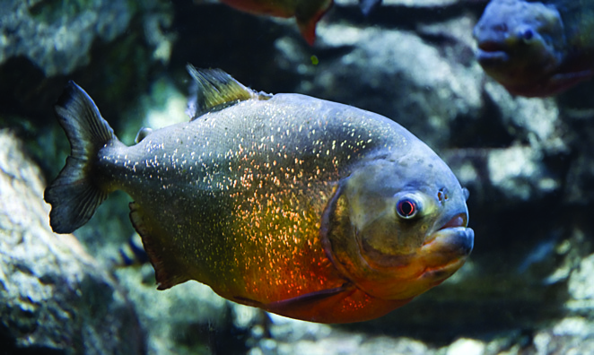

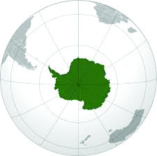
68
68
kmaq-ly-imkv{Xw V
kmaq-ly-imkv{Xw V
\Zn-bn¬ Cd-ßt√!
Ba-tkm¨ \Zn-bn¬ ImW-s∏-
Sp∂ Hcn\w ao\mWv ]ncm\. a‰p
a’y-ß-sfbpw \Zn-bn¬ Cd-ßp∂
Pohn-I-sfbpw
Iq´-tØmsS
B{Ian®v AXns‚ aq¿®-tb-dnb
]√p-Iƒ sIm≠v \nanjt\c-Øn¬
Ch Xn∂p Xo¿°pw!
sXt° Ata-cn°≥ h≥I-c-bnse {][m-\-s∏´ P¥p-°-fp-sSbpw kky-
ß-fp-sSbpw Nn{X-߃ C‚¿s\‰n¬\n∂v tiJ-cn-®v kmaq-ly-im-kv{X-
em-_nse Iºyq´dn¬ {]tXyI t^mƒUdn¬ kq£n°pI.
A‚m¿´n°
$
hep∏-Øn¬
A©mw
ÿm\-ØmWv A‚m¿´n°.
$
temI-Ønse G‰hpw
XWp∏p-Iq-Snb {]tZ-iw.
$
h¿jwapgp-h≥ a™p-
aqSn°nS-°p-∂-Xp-sIm≠v
shfpØ `qJfiw F∂-
dnb-s∏-Sp-∂p.
A‚m¿´n°
A‚m¿´n°
ac-®o\n \mS-\√
tIc-fo-b-cpsS CjvS`£-W-amb
ac®o-\n-bpsS P∑-tZiw sXt°
Ata-cn-°-bmWv. CXp-t]mse
\ap°v ]cn-N-b-ap≈ ]e Im¿jnI
hnfIfpw sXt° Ata-cn-°-bn¬
\n∂ph∂-Xm-Wv.
Page 69
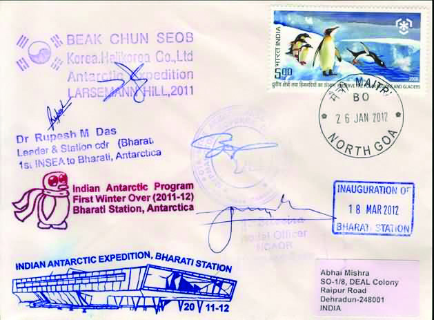
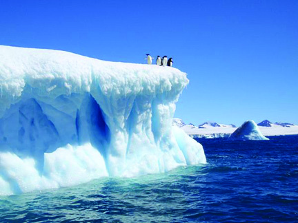
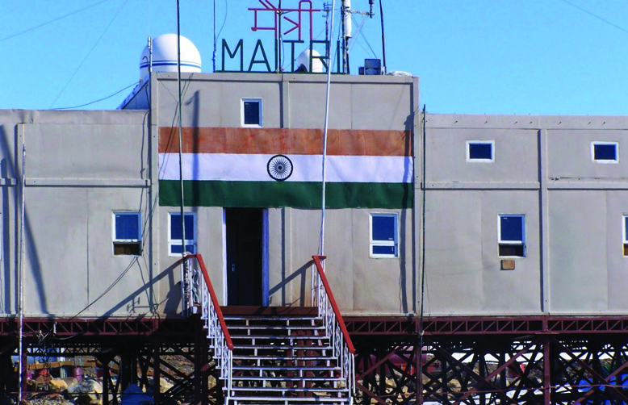
h≥I-c-Ifpw kap-{Z-ßfpw
69
69
h≥I-c-Ifpw kap-{Z-ßfpw
$
ÿnc-amb P\-hm-k-an-√.
$
Af-h‰ [mXp\nt£-]-ßfp≈ Cu
h≥I-c-bn¬ [mXp-]cy-thjW-Øn-
\mbpw Imem-hÿm]T-\߃-
°mbpw ]e -cm-Py-ß-fpw KthjW-
tI{μ-߃ ÿm]n-®n-´p-≠v.
$
"ssa{Xn', "`mcXn' F∂n-h C¥y-bpsS A‚m¿´n-°-bn-ep≈ Kth-j-
W-tI-{μ-ß-fmWv.
Cu h≥I-c-bn¬ ImW-s∏-Sp∂ P¥p-Pm-e-ß-fpsS Nn{X-߃
C‚¿s\‰n¬\n∂v tiJ-cn®v kmaqlyim-kv{X- em-_nse Iºyq-´-dn¬
{]tXyI t^mƒU-dn¬ kq£n-°pI.
bqtdm∏v
$
A‰vem‚nIv kap-{Z-Øn\pw Gjy-mh≥I-cbv°pw CS-bn-embn ÿnXn
sNøp-∂p.
Z£nW KwtKm-{Xn ]n.H.
C¥y-bpsS BZy A‚m¿´nIv Kth-jW
tI{μ-amb Z£nW KwtKm-{Xn-bn¬
1983˛¬ C¥y Hcp X]m-em-^okv
Xpd°pIbpw AhnsS\n∂v c≠m-bn-
ctØmfw IØp-Iƒ Abbv°p-Ibpw
sNbvXp!
A‚m¿´n-°-bn¬ ImWs∏Sp∂
s]≥Kzn-\p-Iƒ
a™p-a-e-Iƒ
C¥y≥ Kth-j-W-tI{μw˛ssa{Xn
Page 70
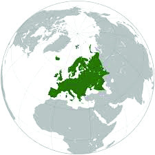
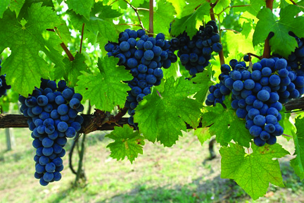
70
70
kmaq-ly-imkv{Xw V
kmaq-ly-imkv{Xw V
$
hep∏-Øn¬
Bdmw
ÿm\-Øm-Wv.
$
bpdm¬ ]¿hX\nc bqtdm-
∏ns\ Gjy-bn¬\n∂v
th¿Xn-cn-°p∂p.
$
P\-kw-Jy-bn¬ aq∂mw
ÿm\w.
$
bqtdm-∏ns‚
sX°p-
`mKØv anX-amb NqSpw
XWp-∏p-amWv A\p-`-h-s∏-
Sp-∂-sX-¶nepw hS°p-
`mKØv AXn-I-Tn-\-amb
XWp-∏mWv.
$
hymh-km-bn-I-ambn hf-sc-tbsd ]ptcm-KXn {]m]n-®n-cn-°p-∂p.
$
a’y-_-‘\w Hcp {][m\ sXmgn-emWv.
bqtdm∏v
bqtdm∏v
bqtdm∏nse {][m-\-s∏´ kky-ß-fp-sSbpw P¥p-°-fp-sSbpw Nn{X-߃
C‚¿s\‰n¬\n∂v tiJ-cn-®v Iºyq´dn¬ {]tXyI t^mƒUdn¬
kq£n°pI.
e≠≥ \Kcw
kvIobnMv˛bqtdm-∏nse hnt\mZw
ap¥n-cn-°rjn
Page 71
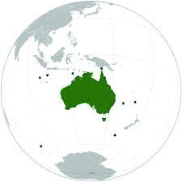
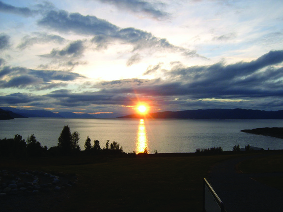

h≥I-c-Ifpw kap-{Z-ßfpw
71
71
h≥I-c-Ifpw kap-{Z-ßfpw
Bkvt{S-en-b
$
G‰hpw sNdnb h≥Ic.
$
Hmjym-\nb F∂ t]cnepw
Adn-b-s∏-Sp-∂p.
$
]q¿W-ambpw Pe-Øm¬
Np‰-s∏´v ÿnXnsNøp-
∂Xn-\m¬
Bkvt{S-
enbsb h≥IcZzo]v F∂v
hnti-jn-∏n-°p-∂p.
$
ap´-bn-Sp∂ kkvX-\n-bmb
πm‰n-∏kv, k©narKw
F∂-dn-b-s∏-Sp∂ I¶mcp, \mb h¿K-Øn¬s∏Sp∂ Unt¶m-Iƒ
XpS-ßnbh Cu h≥I-c-bn¬ am{Xw ImW-s∏-Sp-∂-h-bm-Wv.
$
tKmXºv [mcm-f-ambn Irjn sNøp-∂p.
Bkvt{Senb
Bkvt{Senb
knUv\n \Kcw
ImƒKq¿en kz¿W-J\n
]mXn-cm-kq-cys‚ \mSv ˛ t\m¿th
B¿´nIv hrØ-Øn-\p-≈n¬ (66½°
hS°v) ÿXn-sN-øp∂ t\m¿th,
^n≥em≥Uv XpS-ßnb cmPy-ß-fn¬
h¿j-Øn¬ Bdv amkw ]Iepw Bdv
amkw cm{Xn-bp-amWv A\p-`-h-s∏-Sp-
∂Xv. CØcw {]tZ-i-ßsf°p-dn®v
IqSp-X¬ Adn-bp-∂-Xn-\mbn Fkv.-sI.
s]ms‰-°m-Sns‚ "]mXn-cm-kq-cys‚ \m´n¬' F∂ ]pkvXIw
hmbn°pat√m.
Page 72
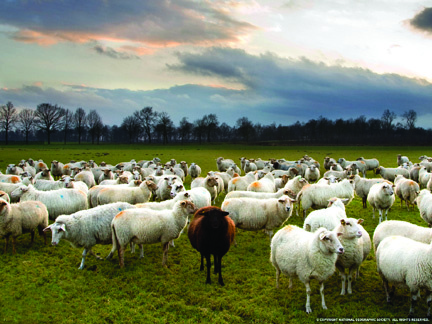

72
72
kmaq-ly-imkv{Xw V
kmaq-ly-imkv{Xw V
$
kz¿Æw, Ccp-º-bn-cv, bptd-\nbw
XpS-ßnb [mXp-°ƒ Cu
h≥Ic-bn¬ \n∂v h≥tXm-
Xn¬ J\\w sNø-s∏-Sp-∂p.
$
sNΩ-cn-bmSp hf¿Ø-en\v
{]kn-≤-am-Wv.
sNΩ-cn-bmSv hf¿Ø¬˛\yqkn-em‚ v
]q¿W-ambpw Pe-Øm¬ Np‰-
s∏´p InS-°p∂ Ic-`m-K-ß-fmWv
Zzo]p-Iƒ. A‰vem‚nIv kap-{Z-
Øns‚ hS°p`mKØv ÿnXn
sNøp∂ {Ko≥em‚mWv temI-
Ønse G‰hpw henb Zzo]v.
Zzo]p-Iƒ
XpI¬ k©n-bnse Ip™v
ico-c-Øn\p shfn-bn¬ Hcp XpI¬ k©n; AXn-\p-≈n¬ Hcp Ip™v.
Cu arK-ta-sX∂p a\- n-em-bn-t√? Hmkvt{S-en-b-bn¬ ImWp∂
I¶mcp- F∂ Cu arK-Øn\v ]n≥Im-ep-Ifpw hmep-ap-]-tbm-Kn®v
AXnthKw NmSn-t∏m-Ip-hm-\p≈ Ign-hp-≠v.
Bkvt{S-en-bbnse {][m-\-s∏´
kky-ß-fp-sSbpw P¥p-°-fp-sSbpw
Nn{X-߃ C‚¿s\‰n¬\n∂v tiJ-
cn®v kmaq-ly-im-kv{X-em-_nse
Iºyq´dn¬ {]tXyI t^mƒUdn¬
kq£n°pI.
h≥I-c-I-sf-°p-dn®v t\Snb Adn-hp-Iƒ Dƒs∏-SpØn Hcp ]´nI Xbm-
dm-°mw. CXn-\mbn A‰ve-kns‚ tkh-\hpw {]tbm-P-\-s∏-Sp-Ømw.
Page 73

h≥I-c-Ifpw kap-{Z-ßfpw
73
73
h≥I-c-Ifpw kap-{Z-ßfpw
Cu ]´nI Hcp Nm¿´v t]∏-dn¬ ]I¿Øn ¢mkvap-dn-bntem kmaq-ly-im-
kv{X-em-_ntem {]Z¿in-∏n°p-at√m.
(Hmtcm h≥I-c-Ibv°pw t\sc-bp≈ F√m tImf-ßfpw ]q¿Øn-bm-°m≥
Ign-bn√ F∂v Hm¿°p-a-t√m.)
hnhn[ h≥I-c-I-fp-ambn _‘-s∏´v tiJ-cn® Nn{X-߃ Dƒs∏-SpØn
Hcp UnPn‰¬ B¬_w Xbm-dm-°p.
temI-Ønse Ggv h≥I-c-Iƒ ]cn-N-b-s∏-´-t√m. Cu h≥I-c-Iƒ°nSbn-
embn ImW-s∏-Sp∂ hnim-e-amb kap-{Z-߃ \n߃ {i≤n-®nt√?
(Nn{Xw 6.1).
temI-`q-]Sw (6.1) t\m°n-bm¬ GsXms° kap-{Z-߃ Is≠-Øm≥
Ign-bpw? Fgp-Xn-t®¿°p.
$
]k-^nIv kap{Zw
$
$
$
$
kap-{Z-ß-sf√mw ]c-kv]cw tN¿∂mWv ÿnXnsNøp-∂-Xv. Hcp t•m_n-
s‚-tbm k¨t¢m-°v, am¿_nƒ XpS-ßnb tkm^v‰vshb-dp-I-fp-sStbm
klm-b-tØmsS \n߃°nXv Is≠-Øm-\m-Ipw. ]c-kv]cw
IS¬
`mKn-I-ambn Ic-I-fm¬ Np‰-s∏´
kap-{Z-`m-K-ß-fmWv IS-ep-Iƒ
h≥I-c-Iƒ
hen-∏-{I-a-Øn¬
{][m-\
]¿h-X-߃
{][m-\
\Zn-Iƒ
a‰p khn-ti-
j-X-Iƒ
acp-`q-an-Iƒ
Page 74

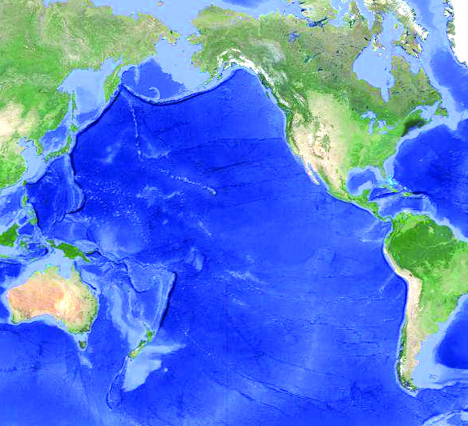
74
74
kmaq-ly-imkv{Xw V
kmaq-ly-imkv{Xw V
tN¿∂pÿnXn-sN-øp∂ kap-{Z-ß-ƒs°√mwIqSn ]d-bp∂ t]cmWv
temI-a-lm-k-ap{Zw (World Ocean).
C\n \ap°v Hmtcm kap-{Z-sØbpw ]cn-N-b-s∏-Smw.
]k-^nIv kap{Zw
hen∏Øn¬
H∂mw
ÿm\w ]k-^nIv kap-{Z-
Øn-\mWv. (Nn{Xw 6.2).
G‰hpw IqSp-X¬ Zzo]p-Iƒ
ImW-s∏-Sp-∂Xv Cu kap-{Z-
Øn-em-Wv. ]k^nIv kap-
{Z-Ønse "Ne-©¿ K¿Ø' amWv temI-Ønse G‰hpw Bgw IqSnb
`mKw. temIØv G‰hpw IqSp-X¬ a’y-_‘\w \S-°p-∂Xv ]k^nIv
kap-{Z-ØnemWv. ]k-^nIv kap{Zw [mXpkº-∂-am-Wv.
]k-^nIv kap-{ZØns‚ hen∏w
]k-^nIv kap-{Zhpw AXn-t\mSptN¿∂p-
ÿnXn-sN-øp∂ IS-ep-Ifpw tN¿∂m¬
`qan-bpsS BsI hnkvXr-Xn-bpsS aq∂n-
semcp`mK-tØmfwhcpw˛F√m h≥-
IcIfpw tN¿∂m-ep≈ BsI hep∏-
tØ-°mƒ IqSp-X¬!
(Nn{Xw 6.2) ]k-^nIv kap{Zw
hSt° Ata-cn°
hSt° Ata-cn°
Gjy
Gjy
Bkvt{S-enb
Bkvt{S-enb
sXt° Ata-cn°
sXt° Ata-cn°
]k-^nIv kap{Zw
]k-^nIv kap{Zw
B¿´nIv kap{Zw
B¿´nIv kap{Zw
(Not to Scale)
Page 75
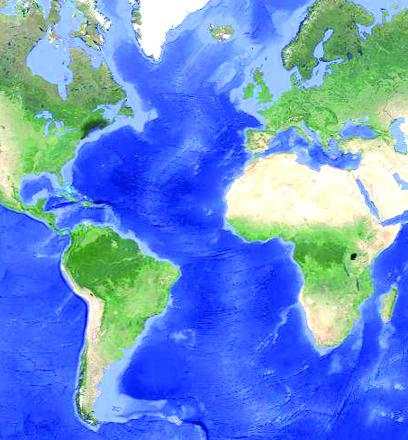
h≥I-c-Ifpw kap-{Z-ßfpw
75
75
h≥I-c-Ifpw kap-{Z-ßfpw
Nn{Xw 6.2 \nco-£n®v ]k-^nIv kap-{Z-tØmSv tN¿∂p InS-°p∂ h≥Ic-
Iƒ Is≠Øn Fgp-Xp-I.
A‰vem‚nIv kap{Zw
hep∏-Øn¬ c≠mw ÿm\-amWv A‰vem‚n-Iv kap-{Z-Øn\v. temI-Ønse
G‰hpw {][m-\-s∏´ a’y-_-‘\tI{μ-ß-fn-sem-∂mb "{Km‚ v_m¶vkv'
Cu kap-{Z-Øn-em-Wv. A‰vem‚nIv kap-{Z-Øns‚ hS-°p-`m-K-Øn\v temI-
Ønse G‰hpw Xnc-t°-dnb kap-{Z-]mX F∂ hnti-j-W-ap-≠v.
Nn{Xw 6.3 \nco-£n®v A‰v-em‚nIv kap-{Z-tØmSp tN¿∂p≈ h≥Ic-
Iƒ Is≠Øn tcJ-s∏-Sp-Øp-I.
C¥y≥ alm-k-ap{Zw
Nn{Xw 6.4 \nco-£n-°p. hep∏-Øn¬ aq∂mw ÿm\-ap≈ Cu kap-{Z-
Øn\v Hcp cmPy-Øns‚ t]cn¬ Adn-b-s∏-Sp∂ kap{Zw F∂
hntijW-ap≠v. CXns‚ `mK-ß-fmWv Ad-_n°Sepw _wKmƒ Dƒ°-
S-epw.
(Nn{Xw 6.3) A‰vem‚nIv kap{Zw
hSt° Ata-cn°
hSt° Ata-cn°
sXt° Ata-cn°
sXt° Ata-cn°
bqtdm∏v
bqtdm∏v
B{^n°
B{^n°
A‰v-em‚nIv kap{Zw
A‰v-em‚nIv kap{Zw
(Not to Scale)
Page 76
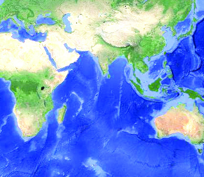
76
76
kmaq-ly-imkv{Xw V
kmaq-ly-imkv{Xw V
C¥y≥ a-lm-k-ap-{Z-Øn\v hS-°p-h-i-Ømbn ÿnXn-sN-øp∂ h≥Ic
GsX∂v `q]Sw \nco-£n®v Is≠Øp.
(Nn{Xw 6.4) C¥y≥ alm-k-ap{Zw
Bkvt{S-enb
Bkvt{S-enb
B{^n°
B{^n°
Gjy
Gjy
C¥y≥almkap{Zw
C¥y≥almkap{Zw
(Not to Scale)
]hn-g-∏p-‰p-Iƒ
]hn-g-∏p-‰p-Iƒ C¥y≥ a-lm-k-ap-{Z-Ønse Hcp {][m-\ -{]-tXy-I-X-
bmWv. DjvW-ta-J-em-k-ap-{Z-ß-fn¬ ImW-s∏-Sp∂ tImd¬ t]mfn-∏p-
Iƒ F∂ kap-{Z-Po-hn-I-fpsS arXm-h-i-n-jvS-߃ ASn-™p-Iq-Sn-bmWv
]hn-g-∏p-‰p-Iƒ cq]-s∏-Sp-∂-Xv. Ad-_n-°-S-ense e£-Zzo]v Zzo] kaq-
l-Øn¬ A[n-Ihpw ]hn-g-Zzo-]pI-fm-Wv.
Nn{Xw 6.4 \nco-£n®v C¥y≥ alm-k-ap-{Z-tØmSp tN¿∂p-In-S-°p∂
h≥I-c-Iƒ Is≠Øn ]´n-I-s∏-Sp-Øp-I.
Page 77
h≥I-c-Ifpw kap-{Z-ßfpw
77
77
h≥I-c-Ifpw kap-{Z-ßfpw
A‚m¿´nIv kap{Zw
A‚m¿´n° h≥I-c-tbmSptN¿∂v ÿnXnsNøp∂ kap-{Z-amWv
A‚m¿´nIv kap-{Zw. hfsctbsd XWp-∏p≈ {]tZ-i-am-b-Xn-\m¬ Cu
kap-{Z-Øns‚ D]-cn-`mKw GI-tZiw ]q¿W-ambpw XWp-Øp-d-™
Ahÿ-bn-emWv. Cu kap-{ZØns‚ ASn-Ø-´n¬ [mcmfw
[mXp\nt£]ßfps≠∂v Icp-X-s∏-Sp-∂p. [mcmfw a’ykºØpw Cu
kap-{Z-Øn-ep-≠v.
B¿´nIv kap{Zw
DØ-c-{[p-hsØ Np‰n-°n-S-°p∂ kap-{Z-amWv B¿´nIv kap-{Zw. Cu
kap{Zw h¿j-Øn¬ Bdp-am-k-Øn-te-sd-°mew a™p-aq-Sn-°n-S-°p-∂p.
temI`q]Sw, t•m_v F∂nh \nco-£n®v A‚m¿´nIv, B¿´nIv F∂o
kap-{Z-ß-fpsS ÿm\w Is≠-Øp-a-t√m.
\mw A[nhkn°p∂ `qan F{X hnkvXrXhpw sshhn[yam¿∂Xp-
amsW∂v a\ nembnt√. Cu sshhn[yßsf {]tbmP\s∏Sp-
ØnbmWv `qanbn¬ a\pjy¿ Dƒ∏sSbp≈ kkyP¥pPme߃
\ne\n¬°p-∂Xv. ASn-ÿm\ Bh-iy-ß-fmb Pew, `£Ww,
]m¿∏nSw, hkv{Xw, XpSßnbhbvs°√mw a\p-jy¿ B{i-bn-°p-∂Xv
{][m-\-ambpw `qan-bnse Ic-`m-K-sØ-bmWv. `qanbn¬ \ΩpsS \ne\n¬∏v
km[yam°p∂Xn¬ h≥IcIƒ°pw kap{Z߃°pw henb ]¶p≠v.
a’ykºØv, [mXp\nt£]߃, KXmKXw, hnt\mZw XpSßn hnhn[
XcØn¬ {]Xy£ambpw ]tcm£ambpw \mw kap{Zßsf {]tbmP\-
s∏SpØp∂p≠v. `qan F√m PohPme߃°pw AhImi-s∏´XmWv.
Icbnepw kap{Zßfnepambn \nesIm≈p∂ hn`-h-k-ºØv
hcpwXeapdIƒ°pIqSn Adnbm\pw A\p`hn°m\pw th≠n
ImØpkq£nt°≠Xv \mw HmtcmcpØcpSbpw ISabmWv.
Page 78
78
78
kmaq-ly-imkv{Xw V
kmaq-ly-imkv{Xw V
$
sshhn-[y-߃ \nd™ `qan-bn¬ Xs‚ ÿm\w a\-kn-em-°p-Ibpw
Xm\-S-°-ap≈ Poh-Pm-e-ß-fpsS \ne-\n¬∏v Cu sshhn-[ysØ
B{i-bn-®mWv F∂ Xncn-®-dnhv t\Sp-Ibpw Ch kwc-£n-t°-≠-
Xns‚ Bh-iy-IX hniIe\w sNøpIbpw sNøp-∂p.
$
`qan-bnse sshhn[yhpw hn`-h-k-ºØpw ImØp-kq-£n-t°-≠Xv
Hmtcm--cp-Ø-cp-sSbpw IS-a-bmsW∂v hy‡am°p-∂p.
hne-bn-cp-Ømw
1.
kqN-\-I-fn¬\n∂v h≥Ic GsX∂v Xncn-®-dn™v Ah Hmtcm-∂n\v
Np‰p-ap≈ kap-{Z-߃ Is≠-Øp.
kw{Klw
$
`qan-bpsS D]-cn-X-e-Øns‚ `qcn-`m-Khpw Pe-amWv.
$
`qan-bn¬ A©v kap-{Z-ßfpw Ggv h≥I-c-I-fp-ap≠v.
$
AXn-hn-kvXr-Xamb Pem-i-b-ß-fmWv kap-{Z-߃.
$
kap-{Z-߃°n-S-bn-embn ÿnXn sNøp∂ AXn-hn-im-e-amb Ic`mK-
ß-fmWv h≥I-c-Iƒ.
$
h≥I-cIfpsS `q{]-IrXn, Imem-h-ÿ, kky-P-¥p-Pm-e-߃
F∂nh-bn-sems° sshhn[yw \ne-\n¬°p-∂p.
$
`qan-bn¬ \ΩpsS \ne-\n¬∏v km[y-am-°p-∂-Xn¬ h≥I-c-
Isft∏mse kap-{Z-߃°pw {][m-\-]-¶p-≠v.
$
`qan-bnse sshhn[yhpw hn`-h-k-ºØpw ImØp-kq-£n-t°-≠Xv
\mw Hmtcm--cp-Ø-cp-sSbpw IS-a-bmWv.
{][m\ ]T-\-t\-´-ßfn¬ s]Sp-∂h
$
`q]Sw, t•m_v, A‰vekv F∂n-h-bpsS klm-b-tØm-Sp-IqSn
h≥IcIƒ, kap-{Z-߃ F∂nh hniZoIcn°p∂p.
$
h≥I-c-Isfbpw kap-{Z-ßsfbpw kw_-‘n-°p∂ \nKa\w
cq]oIcn°p∂p.
Page 79
h≥I-c-Ifpw kap-{Z-ßfpw
79
79
h≥I-c-Ifpw kap-{Z-ßfpw
(F)
temI-Ønse G‰hpw henb acp-`qan Chn-sS-bm-Wv.
(_n) h≥I-c-Zzo]v F∂v hnti-jn-∏n-°p-∂p.
2.
Gjy sshhn-[y-ß-fpsS `qJ-fi-am-Wv. DZm-l-c-W-klnXw
hy‡am-°p-I.
3.
h≥I-c-Isf hep-∏-Øns‚ ASn-ÿm-\-Øn¬ ]´n-I-s∏-SpØp.
XpS¿{]h¿Ø\w
h≥I-c-Isf°pdn-®p≈ hnh-c-ßfpw Nn{X-ßfpw tiJ-cn®v Hcp
kNn{X]Xn∏v Xbm-dm-°p.